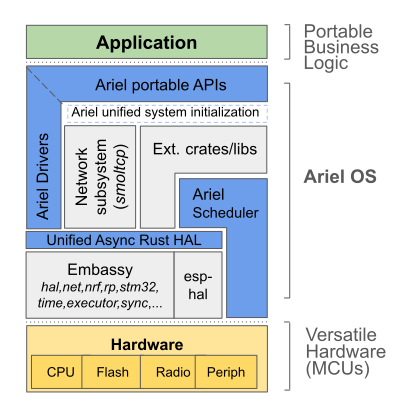

Introduction
Ariel OS is an operating system for secure, memory-safe, networked applications running on low-power microcontrollers. It is based on Rust from the ground up and supports hardware based on 32-bit microcontroller architectures (Cortex-M, RISC-V, and Xtensa). Many features provided by Ariel OS can individually be enabled or disabled at build time in order to minimize resource consumption.
Goals and Design
Ariel OS builds on top of existing projects from the Embedded Rust ecosystem, including Embassy, esp-hal, defmt, probe-rs, sequential-storage, and embedded-test.
Ariel OS follows an approach whereby it simultaneously integrates a curated ecosystem of libraries (available via crates.io), and adds missing operating system functionalities as depicted below. Such functionalities include a preemptive multicore scheduler, portable peripheral APIs, additional network security facilities, as well as a meta-build system to bind it all together.
As a result, a low-power IoT developer can focus on business logic sitting on top of APIs which remain close to the hardware but nevertheless stay the same across all supported hardware, inspired by what RIOT tends to in that regard. The intent is three-fold: reduce application development time, increase code portability, and minimize core system vulnerabilities.
In a nutshell: Ariel OS contributes to the global effort aiming to (re)write IoT system software foundations on more solid ground than what traditional building blocks written in C can provide. And this is a joyful and welcoming open-source community, so: join us!

Further Reading
Even though not necessary for using Ariel OS, readers of this book might also want to have a look at the following resources:
- The Embedded Rust Book: General information about how to use Rust for embedded and the structure of the Rust embedded ecosystem, which Ariel OS abstracts over.
- Embassy Book: Hardware abstractions and async executors that Ariel OS builds on.
Hardware & Functionality Support
The table below indicates whether we support using the piece of functionality in a portable manner, trough an abstraction layer and platform-aware configuration.
| Chip | Testing Board | Functionality | |||||||||||
|---|---|---|---|---|---|---|---|---|---|---|---|---|---|
| Manufacturer Name | Ariel OS Name | Manufacturer Name | Ariel OS Name | GPIO | Debug Output | I2C Controller Mode | SPI Main Mode | Logging | User USB | Wi-Fi | Ethernet over USB | Hardware Random Number Generator | Persistent Storage |
| nRF52833 | nrf52833 |
BBC micro:bit V2 | bbc-microbit-v2 |
✅ | ✅ | ✅ | ✅ | ✅ | – | – | – | ✅ | ✅ |
| ESP32-C6 | esp32c6 |
Espressif ESP32-C6-DevKitC-1 | espressif-esp32-c6-devkitc-1 |
✅ | ✅ | ✅ | ✅ | ✅ | ❌ | ☑️ | ❌ | ✅ | ❌ |
| ESP32-S3 | esp32s3 |
Espressif ESP32-S3-DevKitC-1 | espressif-esp32-s3-devkitc-1 |
✅ | ✅ | 🚦 | 🚦 | ✅ | ❌ | ✅ | ❌ | ✅ | ❌ |
| nRF52840 | nrf52840 |
nRF52840-DK | nrf52840dk |
✅ | ✅ | ✅ | ✅ | ✅ | ✅ | – | ✅ | ✅ | ✅ |
| nRF5340 | nrf5340 |
nRF5340-DK | nrf5340dk |
✅ | ✅ | ✅ | ✅ | ✅ | ✅ | – | ✅ | ✅ | ✅ |
| RP2040 | rp2040 |
Raspberry Pi Pico | rpi-pico |
✅ | ✅ | ✅ | ✅ | ✅ | ✅ | – | ✅ | ✅ | ✅ |
| RP235xa | rp235xa |
Raspberry Pi Pico 2 | rpi-pico2 |
✅ | ✅ | 🚦 | ✅ | ✅ | ✅ | – | ✅ | ✅ | ✅ |
| RP2040 | rp2040 |
Raspberry Pi Pico W | rpi-pico-w |
✅ | ✅ | ✅ | ✅ | ✅ | ✅ | ✅ | ✅ | ✅ | ✅ |
| STM32F401RETX | stm32f401retx |
ST NUCLEO-F401RE | st-nucleo-f401re |
✅ | ✅ | 🚦 | 🚦 | ✅ | – | – | – | – | ❌ |
| STM32H755ZITX | stm32h755zitx |
ST NUCLEO-H755ZI-Q | st-nucleo-h755zi-q |
✅ | ✅ | ✅ | ✅ | ✅ | ✅ | – | ❌ | ✅ | ☑️ |
| STM32WB55RGVX | stm32wb55rgvx |
ST NUCLEO-WB55RG | st-nucleo-wb55 |
✅ | ✅ | ✅ | ✅ | ✅ | ✅ | – | ✅ | ✅ | ☑️ |
Key:
- ✅
- supported
- ☑️
- supported with some caveats
- 🚦
- needs testing
- ❌
- available in hardware, but not currently supported by Ariel OS
- –
- not available on this piece of hardware
Getting started with Ariel OS
This guide is intended to get you started in about 5 minutes.
It explains how to compile and run the hello-word example to verify your setup, and how to bootstrap a new application.
Currently only GNU/Linux is supported in this guide.
Installing the build prerequisites
-
Install the needed build dependencies. On Ubuntu, the following is sufficient:
apt install git rustup ninja-build pkg-config libudev-dev clang gcc-arm-none-eabi gcc-riscv64-unknown-elf gcc curl -
Install the Rust installer rustup using the website's instructions or through your distribution package manager.
-
Only for using ESP devices, install espup and related tools:
cargo install espup espup install cargo install espflashThere is no need to actively source the
~/export-esp.shfile whichespupproduces: Ariel OS's build system will consult that file when building for ESP. -
Install the build system laze:
cargo install laze -
Install the debugging and flashing utility probe-rs:
cargo install --locked probe-rs-tools -
Clone the Ariel OS repository and
cdinto it. -
Install the Rust targets:
laze build install-toolchainThis invokes rustup to add all easy-to-install targets and components, and invokes espup if it is installed.
Running the hello-world example
To check that everything is installed correctly, the hello-word example can be compiled and run from the ariel-os directory.
The following assumes you have your target board connected to your host computer.
Find the Ariel OS name of your supported board in the support matrix.
The following assumes the Nordic nRF52840-DK, whose Ariel OS name is
nrf52840dk. Replace that name with your board's.
Then, from the ariel-os directory, compile and run the example, as follows:
laze -C examples/hello-world build -b nrf52840dk run
(This might fail if the flash is locked, click here for unlocking instructions.)
This might fail due to a locked chip, e.g., on most nRF52840-DK boards that are fresh from the factory. In that case, the above command throws an error that ends with something like this:An operation could not be performed because it lacked the permission to do so: erase_all
The chip can be unlocked using this command:
laze -C examples/hello-world build -b nrf52840dk flash-erase-all
If you do not plan on working on Ariel OS itself, this repository is not needed anymore and can be deleted.
Starting an application project from a template repository
Applications are expected to be developed out-of-tree, outside of the ariel-os directory.
This is made possible by laze's imports feature.
To start a new application project, you can either clone the ariel-os-hello repository or, alternatively, use one of the cargo-generate templates.
Cloning ariel-os-hello
git clone https://github.com/ariel-os/ariel-os-hello
Using a cargo-generate project template
This requires installing cargo-generate, then a new application project can be created as follows:
cargo generate --git https://github.com/ariel-os/ariel-os-template --name <new-project-name>
Running the template example
To check your setup, the default application can be compiled and run as follows:
laze build -b nrf52840dk run
The board name needs to be replaced with your board's.
See the Build System page to learn more about laze and how to work with out-of-tree applications.
laze
Ariel OS makes use of the laze build system to run cargo with the correct parameters for a specific board and application.
laze provides a laze build -b <board> command, which in Ariel OS, internally uses cargo build.
laze commands are by default applied to the application(s) within the directory laze is run.
For example, when run in examples/hello-world, laze build -b nrf52840dk
would build the hello-world example for the nrf52840dk board.
Alternatively, the -C option can be used to switch to the given directory.
laze allows to override global variables using e.g., -DFOO=BAR.
laze tasks
For tasks like flashing and debugging, Ariel OS uses laze tasks.
laze tasks currently have the syntax laze build -b <board> [other options] <task-name>.
For example, to run the hello-world example from the ariel-os directory, the command would be:
laze -C examples/hello-world build -b nrf52840dk run
Tasks available in Ariel OS include:
run: Compiles, flashes, and runs an application. The debug output is printed in the terminal.flash: Compiles and flashes an application.debug: Starts a GDB debug session for the selected application. The application needs to be flashed using theflashtask beforehand.flash-erase-all: Erases the entire flash memory, including user data. Unlocks it if locked.reset: Reboots the target.tree: Prints the application'scargo tree.
As some tasks may trigger a rebuild, it is necessary to pass the same settings to related consecutive commands:
laze build -DFOO=1 flashfollowed bylaze build -DFOO=other debugmight not work as expected, as the second command could be rebuilding the application before starting the debug session.
laze modules
laze allows enabling/disabling individual features using modules, which can be selected
or disabled on the command line using --select <module> or --disable <module>.
To specify laze modules for an out-of-tree application, see below.
Modules are documented in their respective pages.
laze contexts
The laze configuration defines a laze context for each MCU, MCU family, and board. These can be found in the support matrix, where they are called “Ariel OS name”.
Out-of-tree applications can be restricted to specific laze contexts, see below.
In addition, laze passes the names of all contexts related to the selected builder as rustc --cfg context=$CONTEXT flags.
This makes it possible to use the #[cfg] attribute to introduce feature-gates based on the MCU, MCU family, or board, when required.
Out-of-tree applications
New application projects should be started from a template.
Out-of-tree applications use the laze-project.yml file for configuration through laze.
Importing Ariel OS
Ariel OS's source and configuration are imported using laze's imports feature.
The project templates use a git import to ask laze to clone Ariel OS's repository.
The cloned repository is stored inside build/imports.
It is currently recommended to use Ariel OS's commit ID to track the repository, to avoid surprising changes. This commit ID needs to be updated to update the version of Ariel OS used by the application.
It is alternatively possible to clone the repository manually and specify the resulting directory using a path import.
This can be useful when needing to modify Ariel OS itself, when also working on an application.
Enabling laze modules for an application
Instead of manually specifying laze modules on the command line, laze modules required for an application must be specified in the application's laze configuration file, laze-project.yml.
The selects array allows to specify a list of laze modules that will be enabled for the application, as follows:
apps:
- name: <project-name>
selects:
- network
- random
Note that, while the CLI option is named
--select, the configuration key isselects.
The specified modules will be enabled for the application, some of which may enable associated Cargo features (as individually documented for each laze module). If a module is not available on a target—e.g., because networking is not available on the target, or not yet supported by Ariel OS—laze will prevent the application to be compiled for that target.
Forbidding laze modules for an application
Conversely, to forbid laze modules through the configuration file, the conflicts array is used:
apps:
- name: <project-name>
selects:
- sw/threading
conflicts:
- multi-core
This enables support for multithreading, but disables multicore usage.
Restricting an application to specific MCUs/boards
Finally, an application may be restricted to specific MCUs, MCU families, or boards by explicitly specifying laze contexts the application is allowed to be compiled for:
apps:
- name: <project-name>
context:
- bbc-microbit-v2
- nrf52
- nrf5340
- rpi-pico-w
Building an Application
This chapters covers fundamental concepts required to build an Ariel OS application.
Obtaining Peripheral Access
Embassy defines a type for each MCU peripheral, which needs to be provided to the driver of that peripheral.
These peripheral types, which we call Embassy peripherals or peripheral ZSTs, are Zero Sized Types (ZSTs) that are used to statically enforce exclusive access to a peripheral.
These ZSTs indeed are by design neither Copy nor Clone, making it impossible to duplicate them; they can only be moved around.
Drivers therefore require such ZSTs to be provided to make sure that the caller has (a) access to the peripheral and (b) is the only one having access, since only a single instance of the type can exist at any time. Being ZSTs, they do not carry any data to the drivers, only their ownership is meaningful, which is enforced by taking them as parameters for drivers.
If you are used to thinking about MCU peripherals as referenced by a base address (in the case of memory-mapped peripherals), you can think of these ZSTs as abstraction over these, with a zero-cost, statically-enforced lock ensuring exclusive access.
These Embassy types are defined by Embassy HAL crates in the respective peripherals modules.
In Ariel OS applications, the only safe way to obtain an instance of an Embassy peripheral is by using the define_peripherals! macro, combined with a spawner or task.
The group_peripherals! macro can also be useful.
Example
The define_peripherals! macro allows to define a Ariel OS peripheral struct, an instance of which can be obtained with spawner or task:
ariel_os::hal::define_peripherals!(LedPeripherals { led: P0_13 });Multiple Ariel OS peripheral structs can be grouped into another Ariel OS peripheral struct using the group_peripherals! macro:
ariel_os::hal::group_peripherals!(Peripherals {
leds: LedPeripherals,
buttons: ButtonPeripherals,
});Similarly to LedPeripherals, an instance of the Peripherals Ariel OS peripheral struct thus defined can be obtained with spawner or task.
The spawner and task Ariel OS macros
Unlike traditional Rust programs, Ariel OS applications do not have a single entrypoint.
Instead, multiple functions can be registered to be started during boot.
Functions can currently be registered as either spawners or tasks:
spawnerfunctions are non-asyncand should be used when noasyncfunctions need to be called. They are provided with aSpawnerinstance and can therefore be used tospawnotherasynctasks.taskfunctions areasyncfunctions that are statically allocated at compile-time. They are especially useful for long-running,asynctasks. They must also be used to use Ariel OS configuration hooks, which can be requested with their associated macro parameter, and allow to provide configuration during boot. Please refer to the documentation oftaskfor a list of available hooks and to Configuration Hooks to know more about hook usage.
Both of these can be provided with an instance of an Ariel OS peripheral struct when needed, using the peripherals macro parameters (see the macros' documentation) and taking that Ariel OS peripheral struct as parameter.
The Embassy peripherals obtained this way are regular Embassy peripherals, which are compatible with both Ariel OS portable drivers and Embassy HAL crates' HAL-specific drivers.
Examples
Here is an example of the task macro (the pins module internally uses define_peripherals!) from the blinky example:
#[ariel_os::task(autostart, peripherals)]
async fn blinky(peripherals: pins::LedPeripherals) {
let mut led = Output::new(peripherals.led, Level::Low);
loop {
led.toggle();
Timer::after(Duration::from_millis(500)).await;
}
}Configuration Hooks
TODO
Async Executors
Ariel OS embraces async Rust and favors async interfaces over blocking ones.
System Executor Flavors
Ariel OS provides a system executor which is automatically started at startup. It comes in three different flavors, identified by their laze module names:
| laze module | Embassy executor | Description |
|---|---|---|
executor-interrupt | InterruptExecutor | Runs in handler mode. A software interrupt (SWI) handler is used when the MCU provides one, otherwise the board configuration must specify which peripheral interrupt to dedicate to this executor. |
executor-single-thread | Executor | Runs in thread mode in place of threads. Therefore not compatible with multithreading. |
executor-thread | Custom, based on raw::Executor | Runs inside a dedicated thread automatically started at startup. |
A default flavor compatible with the MCU is automatically selected by default in the order of preference in which they are listed above. Another flavor can be manually selected, replacing the default one, by selecting its laze module. Not all flavors are available on all MCUs however, and the laze configuration will only allow selecting one the compatible ones.
The
executor-interruptmight offer a slight performance advantage.
Using Multiple Executors
Using multiple executors is possible but currently undocumented.
Running multiple executors allows running them with different priorities.
Debug Console
Printing on the Debug Console
The debug console is enabled by default and the corresponding laze module is debug-console.
The ariel_os::debug::print!()/ariel_os::debug::println!() macros are used to print on the debug console.
When the debug console is enabled, panic messages are automatically printed to it.
If this is unwanted, the panic-printing laze module can be disabled.
Debug Logging
Ariel OS supports debug logging on all platforms and it is enabled by default with the debug-logging-facade laze module.
Debug logging offers a set of macros that print on the debug console with helpful logging formatting.
Logging
Within Rust code, import ariel_os::debug::log items, then use Ariel OS logging macros:
use ariel_os::debug::log::info; #[ariel_os::task(autostart)] async fn main() { info!("Hello!"); }
Filtering Logs
In Ariel OS, the log level defaults to info. It can be configured using the
laze variable LOG.
Depending on the logger, it may be possible to configure different levels per crate or per module.
Example:
$ laze build -C examples/log --builders nrf52840dk -DLOG=info run
Logging Facades and Loggers
Ariel OS supports multiple logging facades and loggers.
Only one of them may be enabled at a time;
if none of them are enabled, logging statements become no-operations.
Enabling either the defmt or log laze modules allows selecting which logging facade and logger is used.
defmt should be preferred when possible as it results in smaller binaries.
defmt
See the defmt documentation for general info on the defmt's facade and logger.
The defmt logger supports configuring the log level per crate and per module, as follows:
$ laze build -C examples/log --builders nrf52840dk -DLOG=info,ariel_os_rt=trace run
Note: On Cortex-M devices, the order of ariel_os::debug::println!() output and
defmt log output is not deterministic.
log
Ariel OS's logger for log supports configuring the log level globally, but does not currently support per-crate filtering.
Networking
Network Link Selection
Ariel OS currently supports two different networking links: Ethernet-over-USB (aka CDC-NCM) and Wi-Fi. Boards may support both of them, only one of them, or none of them. However, currently the network stack supports at most one interface.
Which link layer is used for networking must be selected at compile time, through laze modules:
usb-ethernet: Selects Ethernet-over-USB.wifi-cyw43: Selects Wi-Fi using the CYW43 chip along an RP2040 MCU (e.g., on the Raspberry Pi Pico W).wifi-esp: Selects Wi-Fi on an ESP32 MCU.
When available on the device, one of these module is always selected by default, currently preferring Wi-Fi networking. Overriding this default selection is possible by explicitly selecting the desired module.
Network Credentials
For Wi-Fi, the network credentials have to be supplied via environment variables:
CONFIG_WIFI_NETWORK=<ssid> CONFIG_WIFI_PASSWORD=<pwd> laze build ...
Using the Networking Link on the Device
Network Configuration
DHCPv4 is used by default for network configuration, including for IP address allocation.
This is enabled by the network-config-dhcp laze module, selected by default.
In order to provide a static configuration, select the network-config-static laze module, which will take precedence.
The configuration can be customized with the following environment variables:
| Variable | Default |
|---|---|
CONFIG_NET_IPV4_STATIC_ADDRESS | 10.42.0.61 |
CONFIG_NET_IPV4_STATIC_CIDR_PREFIX_LEN | 24 |
CONFIG_NET_IPV4_STATIC_GATEWAY_ADDRESS | 10.42.0.1 |
Non-static IPv6 address allocation will be supported in the future.
Support for Network Protocols
Support for various network protocols can be enabled through Cargo features listed in the documentation.
Most of these use embassy_net, which should be used through the ariel_os::reexports::embassy_net re-export.
Using the Network Stack
A network stack handle can then be obtained using ariel_os::net::network_stack().
See the examples for details.
Host Setup
Static IPv4 Address Configuration
When using a device with a static IPv4 address,
the host computer can be configured as follows (where host_address is an IP address configured as gateway for the device):
# ip address add <host_address>/24 dev <interface>
# ip link set up dev <interface>
To verify that the address has indeed be added, you can use:
ip address show dev <interface>
Replace <interface> with the name of the used network interface.
To find out the name of your interface you can use a command such as ip address.
Ethernet-over-USB
For Ethernet-over-USB, ensure that, in addition to the USB cable used for flashing and debugging, the user USB port is also connected to the host computer with a second cable.
Randomness and Entropy Sources
Ariel OS provides RNGs which fulfill needs for both fast and cryptographically secure sources of randomness.
Provided RNGs
The random laze module needs to be enabled to be able to obtain the provided RNGs.
Two different RNG interfaces are provided, which both implement rand_core traits:
- A fast RNG interface, not suitable for cryptography use, which can be obtained with
random::fast_rng(). - A cryptographically secure pseudo-RNG (CSPRNG) interface, which can be obtained with
random::crypto_rng()when thecsprngCargo feature is enabled.
To ensure fast operation of the fast RNG, the obtained RNG must be reused between invocations, instead of obtaining new ones through
random::fast_rng().
RNG Seeding
When the random module is selected, the hwrng laze module is automatically enabled as well, so that the RNGs get automatically seeded from the hardware RNG (i.e., the TRNG) at startup.
In the future, Ariel OS may also support leveraging persistent storage in combination with a pre-provisioned seed to enable to use the CSPRNG on MCUs which do not provide a hardware RNG.
Multithreading
Ariel OS supports multithreading on the Cortex-M, RISC-V, and Xtensa architectures, and is compatible with async executors.
Important:
When an application requires multithreading, it must enable it by selecting the sw/threading laze module, which enables the threading Cargo feature.
Spawning Threads
The recommended way of starting threads is by using the #[ariel_os::thread] attribute macro, which creates and starts the thread during startup.
Threads can also be spawned dynamically at runtime. In this case, the thread stack must still be statically allocated at compile time.
The maximum number of threads is defined by the THREAD_COUNT constant.
Scheduling
Multicore Support
Ariel OS currently supports symmetric multiprocessing (SMP) on the following MCUs:
- ESP32-S3
- RP2040
When the sw/threading laze module is selected and when available on the MCU, the multi-core laze module automatically gets selected, which enables SMP.
To disable multicore, disable the multi-core laze module.
Porting single-core applications to support multicore requires no changes to them.
Priority Scheduling
Ariel OS features a preemptive scheduler, which supports priority scheduling with up to SCHED_PRIO_LEVELS priority levels.
The highest priority runnable thread (or threads in the multicore case) is always executed.
Threads having the same priority are scheduled cooperatively.
The scheduler itself is tickless, therefore time-slicing isn't supported.
Thread priorities are dynamic and can be changed at runtime using thread::set_priority().
On multicore, a single global runqueue is shared across all cores. The scheduler assigns the C highest-priority, ready, and non-conflicting threads to the C available cores. The scheduler gets invoked individually on each core. Whenever a higher priority thread becomes ready, the scheduler is triggered on the core with the lowest-priority running thread to perform a context switch.
Idling
On single core, no idle threads are created. Instead, if no threads are to be scheduled, the processor enters sleep mode until a thread is ready.
On multicore, one idle thread is created for each core. When an idle thread is scheduled, it prompts the current core to enter sleep mode.
Core Affinity
Core affinity, also known as core pinning, is optionally configurable for each thread. It allows to restrict the execution of a thread to a specific core and prevent it from being scheduled on another one.
Persistent Storage
Ariel OS supports persistent storage on a number of boards. It provides a key–value pair store based on sequential-storage.
This storage module is responsible for setting up the the flash storage, and provides the functions to interact with the key–value pair store in the storage.
Use Cases
Persistent storage can be used to store configuration and other variables across reboots and power interruptions on the microcontroller.
Both primitives and compound types can be stored.
Usage
Enabling the Storage Module
The storage module can be enabled by selecting the sw/storage laze module,
which enables the storage Cargo feature.
Using the Storage Module
The storage module provides the necessary getters and setters to interact with the storage backend.
Keys are always &str typed.
Values are required to implement the serde::Serialize
and serde::Deserialize traits.
Under the hood, currently the values are serialized using postcard.
Care must be taken to always read a key with the same value type that it was written before. While using a different value type for reading than for writing is never unsafe, it might result in bogus data.
See the example for details on the usage.
Durability and Corruption
The underlying sequential-storage crate guarantees that the storage can be repaired after power failure during operations. Corruption may lead to unrecoverable data that cannot be repaired. The repair will make sure that the flash state is recovered, so that any next operation should succeed.
Flash Requirements
The storage module requires at least two flash pages.
The effective storage space available is (N - 1) * PAGE_SIZE,
where N is the number of flash pages allocated.
Currently storage is only supported on flash whose pages have a uniform size.
These pages are allocated by Ariel OS after the rodata section in the flash
when the module is enabled.
Updating the firmware can move and invalidate the storage pages when the firmware size differs from the previous version.
NOR flash has limited endurance. When writing applications using the storage module, care must be taken to limit the writes to a reasonable amount, especially at startup when there is the danger of endless writing due to a crash leading to a reboot.
Testing
Ariel OS supports in-hardware testing using the embedded-test crate.
embedded-test, used in conjunction with probe-rs, serves as a replacement for the regular cargo test based test harness, as the latter cannot be used on no_std
(embedded) devices.
Please refer to the embedded-test documentation for
more info.
The build system of Ariel OS integrates the embedded-test-based testing so that
once set up, tests can be run by issuing laze build -b <board> test.
embedded-tests can be used for any target that has probe-rs support (which currently means all targets).
Both async and non-async code can be tested.
Currently, Ariel OS requires a fork of
embedded-test. When using Ariel's build system, this will be used automatically.
Differences from vanilla embedded-test
In Ariel OS, the OS itself will start and initialize components before the tests are run. Logging, networking, ... will be available as for regular Ariel OS applications.
As a consequence, no Cargo features other than ariel-os should be enabled on the embedded-test dependency.
In order to not require default-features = false, the (default)
panic-handler feature is ignored when the ariel-os feature is enabled.
Setting up embedded-test for Ariel OS applications or libraries
Steps for enabling tests:
- Add
embedded-testas a dev-dependency of your crate, and enable itsariel-osCargo feature, as follows:
[dev-dependencies]
embedded-test = { version = "0.6.0", features = ["ariel-os"] }
- Disable the default test harness:
This depends on whether a lib, a bin or a separate test should be tested.
Add the following to your Cargo.toml:
# for a library crate
[lib]
harness = false
or
# for the default `bin`, "name" needs to match the package name
[[bin]]
name = "ariel-os-hello"
harness = false
or
# for a separate test in `test.rs`
[[test]]
name = "test"
harness = false
- Enable the
embedded-testorembedded-test-onlylaze module:
apps:
# for an application:
- name: your-application
selects:
- embedded-test
# for a library:
- name: crate/your-library
selects:
- embedded-test-only
Even a library crate needs an entry in laze's
appsin order to make thetesttask available. Selectingembedded-test-onlywill make sure thatlaze runis disabled.
- Add the following boilerplate to
lib.rs,main.rsortest.rs:
#![allow(unused)] fn main() { This goes to the top of the file #![no_main] #![no_std] #![feature(used_with_arg)] #![feature(impl_trait_in_assoc_type)] }
- Write the tests:
#![allow(unused)] fn main() { #[cfg(test)] #[embedded_test::tests] mod tests { // Optional: An init function which is called before every test #[init] fn init() -> u32 { return 42; } // A test which takes the state returned by the init function (optional) // This is an async function, it will be executed on the system executor. #[test] async fn trivial_async(n: u32) { assert!(n == 42) } } }
Again, please refer to the embedded-test documentation for
more information.
Running the tests
To run a test, execute from within the crate's directory:
laze build -b <board> test
Tooling
This chapter contains documentation on tooling that Ariel OS provides or integrates.
CoAP
CoAP is an application layer protocol similar to HTTP in its use (eg. you could POST data onto a resource on a server that is identified by a URL) but geared towards IoT devices in its format and its security mechanisms.
CoAP provides a versatile set of transports (with IETF Proposed Standards for running over UDP including multicast, over TCP and WebSockets, other standards for running over SMS and NB-IoT, and more in development). It relies on proxies to span across transports and to accommodate the characteristics of particular networks, and offers features exceeding the classical REST set such as observation.
Ariel OS supports the use of CoAP for implementing clients, servers or both in a single device. As part of our mission for strong security, we use encrypted CoAP traffic by default as explained below. Currently, Ariel OS supports CoAP on its original UDP transport. Its CoAP server implementation supports several security mechanisms, whereas client support is not mature yet, and lacks security support.
Usage: Server side
An example of a CoAP server is provided as examples/coap-server, see its coap_run() task for the practical steps.
This requires selecting the coap-server laze module, and on top of the user's handlers, it runs any operating-system-provided CoAP handlers
(which would be started in an independent task if coap-server was not selected).
A CoAP server is created by assembling several resource handlers on dedicated paths:
There might be a path /s/0 representing a particular sensor,
and a path /fwup for interacting with firmware updates.
The CoAP implementation can put additional resources at well-known locations,
eg. /.well-known/core for discovery or /.well-known/edhoc for establishing secure connections.
The handler needs to concern itself with security aspects of the request content (eg. file format parsers should treat incoming data as possibly malformed), but the decision whether or not a request is allowed is delegated to an access policy.
Usage: Client side
The example provided as examples/coap-client, which sends a single POST request.
It requires selecting the coap-client laze module.
A program that triggers a CoAP request provides1 some components to the CoAP stack before phrasing the actual request:
-
A URL describing the resource, eg.
coap://coap.summit.riot-os.org/agendaorcoap+tcp://[2001:db8::1]/.well-known/core.Note that while the address is printed here as a text URL (and may even be entered as such in code), its memory and transmitted representations are binary components.
-
Optionally, directions regarding how to reach or find the host.
This is not needed when there are IP literals involved, or DNS is available to resolve names. Directions may be available if the application discovered a usable proxy, or when it is desired to use opt-in discovery mechanisms such as multicast.
-
A policy reference on how to authenticate the server, and which identity to present. This is optional if there is a global policy, or if there is an implied security mechanism for the URL.
The components required for a request are not documented as such in the CoAP RFCs, but it is the author's opinion that they are a factual requirement: Implementations may implicitly make decisions on those, but the decisions are still made. At the time of writing, there is an open issue to clarify this in the specifications.
Security
The CoAP stack is configured with server and client policies. The security mechanisms used depend on those selected in the policies.
At this stage, Ariel OS uses three pieces of security components: OSCORE (for symmetric encryption), EDHOC (for key exchange) and ACE (for authentication).
OSCORE/EDHOC/ACE were chosen first because they scale down well to the smallest devices, and because they all have in common that they sit naturally on top of CoAP: Their communication consists of CoAP requests and responses. Thus, they work homogeneously across all CoAP transports, and provide end-to-end security across untrusted proxies.
Alternatives are possible (for instance DTLS, TLS, IPsec or link-layer encryption) but are currently not implemented in Ariel OS.
Server access policy
A policy is configured for the whole server depending on the desired security mechanisms. Examples of described policy entries are:
- This is a fixed public key, and requests authenticated with that key are allowed to GET and PUT to
/limit. - The device has a shared secret from its authorization server, with which the authorization server secures the tokens it issues to clients. Clients may perform any action as long as they securely present a token that allows it. For example, a token may allow GET on
/limitand PUT on/led/0. - Any (even unauthenticated) device may GET
/hello/.
In Ariel OS, the policies are selected through laze modules:
coap-server-config-demokeysselects a set of hard-coded identities and policies usable for examples.coap-server-config-unprotectedallows access from any client without any authentication or integrity protection. The list of supported policies is being extended.
Outlook: Interacting with an Ariel OS CoAP server from the host
This section is currently not implemented.
A convenient policy (which is the default of Ariel OS's examples) is to grant the user who flashes the device all access on it. When that policy is enabled in the build system, an unencrypted key is created in the developer's state home directory, from where it can be picked up by tools such as aiocoap-client.
Furthermore, when a CoAP server is provisioned through the Ariel OS build system, public keys and their device associations are stored in the developer's state home directory.
Together, these files act in a similar way as the classic UNIX files ~/.netrc and ~/.ssh/id_rsa{,.pub}.
They can also double as templates for an application akin to ssh-copy-id
in that they enable a server policy like
"any device previously flashed on this machine may GET all resources".
Client policies
The policy for outgoing requests can be defined globally or per request.
Examples of policies that can be available are "expect the server to present some concrete public key, use this secret key once the server is verified", "use a token for this audience and scope obtained from that authentication server", "expect the server to present a chain of certificates for its hostname down to a set of root certificates" (which is the default for web browsers), "establish an encrypted connection and trust the peer's key on first use", down to "do not use any encryption".
Currently, the only available client security policy is "use an insecure request".
Available security mechanisms
These components are optional, but enabled as needed by the policy — only with the "unprotected" policy, none of them are built (which may make sense on a link layer with tight access control). The components also have internal dependencies: EDHOC can only practically be used in combination with OSCORE; ACE comes with profiles with individual dependencies (eg. using the ACE-EDHOC profile requires EDHOC).
Currently, while all the mechanisms described here are implemented in Ariel OS, only EDHOC can be set up through the policy features.
Symmetric encryption: OSCORE
OSCORE (RFC8613) provides symmetric encryption for CoAP requests: It allows clients to phrase their CoAP request, encrypts the parts that a proxy does not need to be aware of2 and sends on the ciphertext in a CoAP request. The server can decrypt the request, process it like any other request (but with the access policy evaluated according to the key's properties), and its response gets encrypted likewise.
Working with symmetric keys requires a lot of care and effort managing keys: assigning the same key twice can have catastrophic consequences, and even recovering from an unplanned reboot is by far not trivial.
Ariel OS does not offer direct access to OSCORE for those reasons, and uses OSCORE's companion mechanisms to set up keys.
Policies are not described in terms of OSCORE keys.
Most of the message is encrypted. Noteworthy unencrypted parts are the hostname the request is sent to, the parts that link a response to a request, and housekeeping details such as whether a request is for an observation and thus needs to be kept alive longer.
Key establishment: EDHOC
EDHOC (RFC9528) is a key establishment protocol that uses asymmetric keys to obtain mutual authentication and forward secrecy. In particular, two CoAP devices can run EDHOC over CoAP to obtain key material for OSCORE, which can then be used for fast communication.
Unless ACE (or, later, certificate chains) are used, the main use of EDHOC in Ariel OS is with raw public keys: Devices (including the host machine) generate a private key, make the corresponding public key known, and then send the public key (or its short ID) along with EDHOC messages to be identified by that public key. This is similar to how SSH keys are commonly used.
Policies described in terms of EDHOC keys include the public key of the peer, which private key to use, whether our public key needs to be sent as a full public key or can be sent by key ID, and what the peer is authorized to do.
Authorization: ACE
The ACE framework (RFC9200) describes how a trusted service (the Authorization Server, "AS") can facilitate secure connections between devices that are not explicitly configured to be used together. It frequently issues CWTs (CBOR Web Tokens) that are to JWTs (JSON Web Tokens) as CoAP is to HTTP.
The general theme of it is that a client that wants to access some resource on a server under the AS's control first asks the AS for an access token, and then presents that token to the server (called Resource Server / RS in that context).
Clients know the AS by having means to establish some secure connection with it, eg. through EDHOC. Resource Servers know the AS by verifying the tokens they receive from the AS, eg. by having a shared secret with the AS or knowing its signing key.
Details of the process are specified in ACE profiles; apart from those listed here, popular profiles include the DTLS profile and the profiles for group communication.
ACE-OSCORE profile
With the ACE-OSCORE profile (RFC9203), the AS provides a random OSCORE key in the token (which is encrypted for the RS), and sends the token along with the same OSCORE key through its secure connection to the client. Before the client can send OSCORE requests, it POSTs the token to the server over an unprotected connection (the token itself is encrypted), along with a random number and some housekeeping data that go into the establishment of an OSCORE context.
The documentation of the CoAP/ACE-OAuth PoC project describes the whole setup in more detail.
ACE-EDHOC profile
The ACE-EDHOC profile is under development in the ACE working group.
It differs from the ACE-OSCORE profile in that the AS does not provide symmetric key material but only points out the respective peer's public keys.
The token may be signed or symmetrically encrypted. It is sent to the server as part of the EDHOC exchange, after the client has authenticated the server.
Outlook: Using ACE from the host during development
This section is currently not implemented.
While full operation of ACE requires having an AS as part of the network, CoAP servers running on Ariel OS can be used in the ACE framework without a live server.
Similar to how an EDHOC key is created on demand on the host, an AS's list of Resource Servers is maintained by default. Tools at the host can then use the locally stored key to create tokens that grant fine-grained permissions on the Ariel OS device.
With the New ACE Workflow developed in ACE, such tokens can also be provisioned into Resource Servers on behalf of clients that are being provisioned. Thus, the offline AS can enable deployed Ariel OS based CoAP servers to accept requests from newly created Ariel OS based CoAP clients without the need for the CoAP client to create a network connection to the host. (Instead, the host needs to find the Resource Server over the network).
Note: Some more exploration of this workflow will be necessary as to how the client can trigger the AS to re-install (or renew) its token in case the Resource Server retired the token before its expiration. For Ariel OS internal use, AS-provisioned tokens might just be retained longer.
Ferrocene
Ferrocene is the open-source qualified Rust compiler toolchain for safety- and mission-critical. Qualified for automotive, industrial and medical development.
Note: Ferrocene requires a (paid) licence to use.
Ferrocene uses criticalup, its variant of rustup, to manage installing its toolchain and components. Once installed, wrapping regular Rust commands like cargo and rustc with criticalup run enables using the qualified tooling.
The Ariel OS build system seamlessly integrates this for targets supported by Ferrocene (currently all Cortex-M).
Installing Ferrocene
Please refer to the official Ferrocene documentation and the criticalup User Guide for instructions.
Using Ferrocene with Ariel OS
To select the Ferrocene toolchain, enable the ferrocene laze module.
Example:
$ laze -Cexamples/hello-world build --builders nrf52830dk --select ferrocene
Alternatively, add ferrocene to the laze modules of your application.
Glossary
Embassy HAL crates
Embassy crates that implement support for specific MCU families:
Adding Support for a Board
This document serves as a guide as to what is currently needed for adding support for a board/device to Ariel OS.
Feel free to report anything that is unclear or missing!
This guide requires working on your own copy of Ariel OS. You may want to fork the repository to easily upstream your changes later.
Adding Support for a Board
The more similar a board is to one that is already supported, the easier. It is usually best to copy and adapt an existing one.
- Ensure that the HAL is supported in
ariel-os-hal. - In
laze-project.yml:parent: The MCU's laze context.- If the MCU does not have a dedicated software interrupt (SWI), choose one
now and set the
CONFIG_SWIenvironment variable. - Ensure there is a way to flash the board:
- If the MCU is supported by probe-rs, specify
PROBE_RS_CHIPandPROBE_RS_PROTOCOL. - If the board is based on
esp, it should inherit the espflash support. - If neither of these are supported, please open an issue.
- If the MCU is supported by probe-rs, specify
- Add a builder for the actual board that uses the context from above as
parent.
Whether to add an intermediate context or just a builder depends on whether the MCU-specific code can be re-used.
Example for the st-nucleo-f401re board:
contexts:
# ...
- name: stm32f401retx
parent: stm32
selects:
- thumbv7em-none-eabi # actually eabihf, but ariel-os doesn't support hard float yet
env:
PROBE_RS_CHIP: STM32F401RETx
PROBE_RS_PROTOCOL: swd
RUSTFLAGS:
- --cfg context=\"stm32f401retx\"
CARGO_ENV:
- CONFIG_SWI=USART2
builders:
# ...
- name: st-nucleo-f401re
parent: stm32f401retx
src/ariel-os-boards/$BOARD: Add a crate that matches the board's name.- This crate should inject the board-specific dependencies to the HAL crates.
src/ariel-os-boards:Cargo.toml: Add a Cargo feature that matches the board's name.src/lib.rs: Add the board to the dispatch logic.
Adding Support for an MCU from a Supported MCU family
- In
laze-project.yml:- Add a context for the MCU (if it does not already exist).
parent: The closest Embassy HAL's context.selects: A rustc-target module.
- Add a context for the MCU (if it does not already exist).
MCU-specific items inside Ariel OS crates are gated behind
#[cfg(context = $CONTEXT)] attributes, where $CONTEXT is the MCU's laze context name.
These need to be expanded for adding support for the new MCU.
At least the following crates may need to be updated:
- The Ariel OS HAL crate for the MCU family.
ariel-os-storageariel-os-embassy
It may also be needed to introduce a new crate in src/ariel-os-chips.
The
ariel-os-chipscrate should eventually not be needed anymore.
Adding Support for an Embassy HAL/MCU family
As of this writing, Ariel OS supports most HALs that Embassy supports,
including esp-hal, nrf, rp, and stm32, but excluding std and wasm.
The steps to add support for another Embassy supported HAL are:
src/ariel-os-hal:Cargo.toml: Add a dependency on the Embassy HAL crate.src/lib.rs: Add the Ariel OS HAL to the dispatch logic.
- Create a new Ariel OS HAL crate (similar to
ariel-os-nrf).
Adding Support for a Processor Architecture
Each rustc target needs its own module in laze-project.yml.
If the processor architecture that is being added is not listed yet, you will
need to take care of that.
Example:
modules:
# ...
- name: thumbv6m-none-eabi
depends:
- cortex-m
env:
global:
RUSTC_TARGET: thumbv6m-none-eabi
CARGO_TARGET_PREFIX: CARGO_TARGET_THUMBV6M_NONE_EABI
RUSTFLAGS:
- --cfg armv6m
The variables RUSTC_TARGET and CARGO_TARGET_PREFIX need to be adjusted.
Add --cfg $HAL as needed.
Chances are that if you need to add this, you will also have to add support for
the processor architecture to ariel-os-bench, ariel-os-rt, ariel-os-threads.
Coding Conventions
Rust
Item Order in Rust Modules
Items SHOULD appear in Rust modules in the following order, based on the one used by rust-analyzer:
- Inner doc comment
- Inner attributes
- Unconditional—i.e., not feature-gated—bodyless modules
- Conditional—i.e., feature-gated—bodyless modules
- Unconditional imports from the following:
std/alloc/core- External crates (including crates from the same workspace)
- Current crate, paths prefixed by
crate - Current module, paths prefixed by
self - Super module, paths prefixed by
super - Re-exports—i.e.,
pubimports not used in the module
- Conditional imports from the same
- Const items
- Static items
- Other items
TODO: type aliases before other items?
TODO: how to organize type definitions w.r.t. related logic?
Imports
Imports from the same crate with the same visibility MUST be merged into a single use statement.
Imports from Re-exports
When using whole-crate re-exports from ariel_os::reexports, two imports SHOULD be used: one to bring the re-exported crate into the scope, and the other one to import the required items from that crate, as it it were a direct dependency of the crate, as follows:
#![allow(unused)] fn main() { use ariel_os::reexports::embassy_usb; use embassy_usb::class::hid::HidReaderWriter; }
Comments
Doc Comments
All public items listed in the documentation—i.e., not marked with #[doc(hidden)]—SHOULD be documented.
Doc comments MUST use the line comment style, not the block style.
Doc comments MUST be written in third person present, not in the imperative mood, as recommended by RFC 1574. Each sentence in doc comments—including the first one, before an empty line—SHOULD end with a period. For instance, instead of:
#![allow(unused)] fn main() { /// Get the underlying value }
write:
#![allow(unused)] fn main() { /// Returns the underlying value. }
More generally, use the std docs as inspiration.
When possible—i.e., when items are in scope—items mentioned in the documentation MUST be linked to (see C-LINK). This is useful for readers, to quickly access the mentioned item, but it also helps prevent the docs from lagging behind, as broken links are tested for in CI, making it easy to spot renamed or removed items.
unsafe Code
When unsafe is used, a SAFETY comment MUST be added, in the style supported by Clippy.
TODO: enforce it in CI
Naming Conventions
Names SHOULD adhere to the official API guidelines.
TODO: how to name error types/error enum variants (CannotDoSth vs DoingSth)?
Dependencies
If the same dependency is used in multiples crates within the workspace, that dependency SHOULD be specified in the workspace's Cargo.toml file and workspace crates should import them from there.
laze
Modules
laze modules in examples and tests MUST use selects instead of depends.
Even though their behaviors are different in the general case, they are equivalent in our case.
Ariel OS Code of Conduct
Ariel OS, like so many other free and open source software projects, is made up of a mixed group of professionals and volunteers from all over the world, working on every aspect of our goals - including teaching, steering, and connecting people.
We want diversity to be one of our greatest strengths, but it can also lead to communication issues and unhappiness. This is why we ask people to adhere to a few ground rules. They apply equally to founders, maintainers, contributors and those seeking help and guidance.
This is not meant to be an exhaustive list of things you are not allowed to do. We rather would like you to think of it as a guide to enrich our community and the technical community in general with new knowledge and perspectives by allowing everyone to participate.
This code of conduct applies to all spaces managed by the Ariel OS community. This includes Matrix, the mailing lists, our GitHub projects, face to face events, and any other forums created by the community for communication within the community. In addition, violations of this code outside these spaces may also affect a person's ability to participate within them.
If you believe someone is violating the code of conduct, we ask that you report it by emailing conduct@ariel-os.org. For more details please see our Reporting Guidelines.
- Be friendly and patient.
- Be welcoming. We strive to be a community that welcomes and supports people of all backgrounds and identities. This includes, but is not limited to members of any race, ethnicity, culture, national origin, colour, immigration status, social and economic class, educational level, sex, sexual orientation, gender identity and expression, age, size, family status, political belief, religion, and mental and physical ability.
- Be considerate. Your work will be used by other people, and you in turn will depend on the work of others. Any decision you take will affect users and colleagues, and you should take those consequences into account when making decisions. Remember that we're a world-wide community, so you might not be communicating in someone else's primary language.
- Be respectful. Not all of us will agree all the time, but disagreement is no excuse for poor behavior and poor manners. We might all experience some frustration now and then, but we cannot allow that frustration to turn into a personal attack. It’s important to remember that a community where people feel uncomfortable or threatened is not a productive one. Members of the Ariel OS community should be respectful when dealing with other members as well as with people outside the Ariel OS community.
- Be careful in the words that you choose. We are a community of
professionals, and we conduct ourselves professionally. Be kind to others.
Do not insult or put down other participants. Harassment and other
exclusionary behavior aren't acceptable. This includes, but is not limited
to:
- Violent threats or language directed against another person.
- Discriminatory jokes and language.
- Posting sexually explicit or violent material.
- Posting (or threatening to post) other people's personally identifying information ("doxing").
- Personal insults, especially those using racist or sexist terms.
- Unwelcome sexual attention.
- Advocating for, or encouraging, any of the above behavior.
- Repeated harassment of others. In general, if someone asks you to stop, then stop.
- When we disagree, try to understand why. Disagreements, both social and technical, happen all the time and Ariel OS is no exception. It is important that we resolve disagreements and differing views constructively. Remember that we’re different. The strength of Ariel OS comes from its varied community, people from a wide range of backgrounds. Different people have different perspectives on issues. Being unable to understand why someone holds a viewpoint doesn’t mean that they’re wrong. Don’t forget that it is human to err and blaming each other doesn’t get us anywhere. Instead, focus on helping to resolve issues and learning from mistakes.
Text based on the Code of Conduct of the Django community.
Questions?
If you have questions, please feel free to contact us.
Reporting Guidelines
If you believe someone is violating the code of conduct we ask that you report it to us by emailing conduct@ariel-os.org.
All reports will be kept confidential. In some cases we may determine that a public statement will need to be made. If that's the case, the identities of all victims and reporters will remain confidential unless those individuals instruct us otherwise.
If you believe anyone is in physical danger, please notify appropriate law enforcement first. If you are unsure what law enforcement agency is appropriate, please include this in your report and we will attempt to notify them.
If you are unsure whether the incident is a violation, or whether the space where it happened is covered by this Code of Conduct, we encourage you to still report it. We would much rather have a few extra reports where we decide to take no action, rather than miss a report of an actual violation. We do not look negatively on you if we find the incident is not a violation. And knowing about incidents that are not violations, or happen outside our spaces, can also help us to improve the Code of Conduct or the processes surrounding it.
In your report please include:
- Your contact info (so we can get in touch with you if we need to follow up)
- Names (real, nicknames, or pseudonyms) of any individuals involved. If there were other witnesses besides you, please try to include them as well.
- When and where the incident occurred. Please be as specific as possible.
- Your account of what occurred. If there is a publicly available record (e.g. a mailing list archive or a public Matrix logger) please include a link.
- Any extra context you believe existed for the incident.
- If you believe this incident is ongoing.
- Any other information you believe we should have.
What happens after you file a report?
You will receive an email from one of the core community members as soon as possible. We promise to acknowledge receipt within 24 hours (and will aim for much quicker than that).
They will review the incident and determine:
- What happened.
- Whether this event constitutes a code of conduct violation.
- Who the bad actor was.
- Whether this is an ongoing situation, or if there is a threat to anyone's physical safety.
If this is determined to be an ongoing incident or a threat to physical safety, their immediate priority will be to protect everyone involved. This means we may delay an "official" response until we believe that the situation has ended and that everyone is physically safe.
Once the working group has a complete account of the events they will make a decision as to how to response. Responses may include:
- Nothing (if we determine no violation occurred).
- A private reprimand from us to the individual(s) involved.
- A public reprimand.
- An imposed vacation (i.e. asking someone to "take a week off" from a mailing list or Matrix).
- A permanent or temporary ban from some or all Ariel OS spaces (mailing lists, Matrix, etc.)
- A request for a public or private apology.
We'll respond within one week to the person who filed the report with either a resolution or an explanation of why the situation is not yet resolved.
Once we've determined our final action, we'll contact the original reporter to let them know what action (if any) we'll be taking. We'll take into account feedback from the reporter on the appropriateness of our response, but we don't guarantee we'll act on it.
Reference
These reporting guidelines were adapted from the Django reporting guidelines